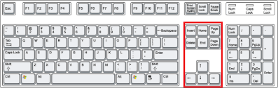

- Setas direcionais (acima, abaixo, esquerda e direita): movem o cursor na direção correspondente
- Home: move o cursor para o início da linha em que ele se encontra.
- End: move o cursor para o final da linha em que ele se encontra.
- Page Up: esta tecla é utilizada para mover o cursor para cima, uma página de cada vez
- Page Down: esta tecla é utilizada para mover o cursor para baixo, uma página de cada vez.
